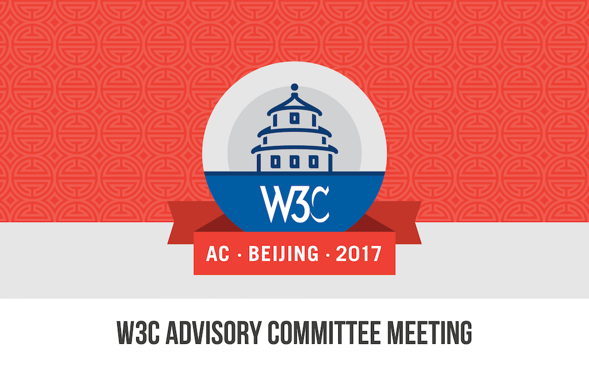

AC Meeting 2017 Presentation
W3C
Accessibility at W3C
Léonie Watson, The Paciello Group (TPG)

From the beginning
W3C = Accessibility
>
1994
- W3C hosts accessibility pages
- Curated by Mike Paciello (Yuri Rubinski Insight Foundation (YRIF))
- Helped by Dave Raggett (W3C)
>
1996
- Daniel Dardailler joins W3C, and begins helping with the accessibility pages
- Mike, Daniel, and Jim Miller (W3C propose a new web accessibility project
>
September 1996
Tim Berners-Lee invites support from W3C members:
"As part of its commitment to realize the full potential of the Web, the Consortium has been
promoting a high degree of usability for disabled people... Michael has proposed that a more
extensive project be started, if there is sufficient provision of resources and enthusiasm by
Consortium Members."
>
January 1997
- At a Whitehouse meeting, W3C is agreed as the ideal host
- Five words describe the proposed project: International, Normative, Consensus, Predictability,
and Participation
>
January 1997
Jim Miller presents the web accessibility project to the AC
>
February 1997
The project is named the Web Accessibility Initiative (WAI)
>
April 1997
WAI is officially launched in Santa Clara, USA
>
May 1997
- WAI WG and WAI IG mailing lists are created
- First WAI technical meetings are held in Sophia-Antipolis, France
- Judy Brewer selected as WAI International Program Director
>
1998 to 2016
WAI becomes a world leader for accessibility
>
Authoring Tool Accessibility Guidelines (ATAG)
- ATAG 1.0, W3C Recommendation 2000
- ATAG 2.0, W3C Recommendation 2015
>
User Agent Accessibility Guidelines (UAAG)
- UAAG 1.0, W3C Recommendation 2002
- UAAG 2.0, W3C Note 2015
>
Web Content Accessibility Guidelines (WCAG)
- WCAG 1.0, W3C Recommendation 1999
- WCAG 2.0, W3C Recommendation 2008
- WCAG 2.1, W3C FPWD 2017
>
Accessible Rich Internet Applications (ARIA)
- ARIA 1.0, W3C Recommendation 2014
- ARIA 1.1, W3C Candidate Recommendation 2017
>
Accessibility API Mappings (AAM)
- Core AAM 1.1, W3C Working Draft 2016
- HTML AAM 1.0, W3C Working Draft 2017
- SVG AAM 1.0, W3C Working Draft 2016
>
October 2015
PF WG split into:
- Accessible Platform Architectures (APA WG)
- Accessible Rich Internet Applications (ARIA WG)
>
November 2016
- The WAI domain is deprecated, but continues as a W3C brand
- HTML AAM 1.0 becomes a Web Platform WG deliverable
>
2017
- APA WG provides horizontal review
- APA WG and CSS WG joint Task Force
>
Challenges: Horizontal review
- Frequently creates conflict
- Often lacks specification domain knowledge
>
Challenges: Joint Task Forces
- Require additional W3C resources
- Require additional member participation
>
Solution
- Accessibility specialists in every WG
- Already in HTML, CSS, SVG, Web Payments and others
>
Vision
W3C = Accessibility as a core design principle
>